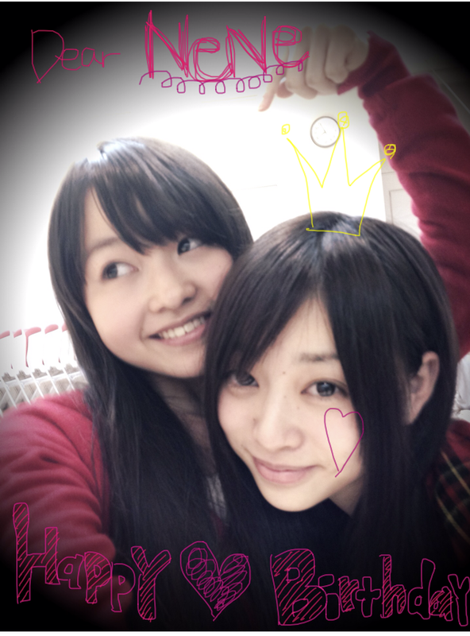
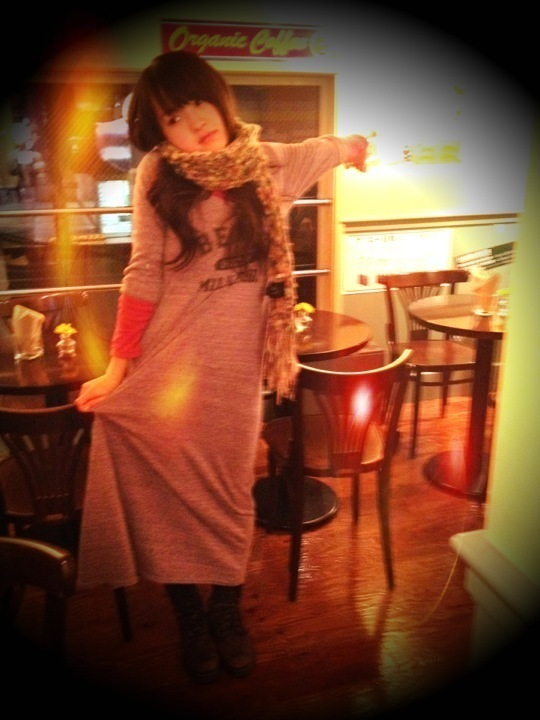

| 2011/12 13 Tue | 25回目*marika |
いつも読んでくださる方、
初めて読んでくださった方、
コメントしてくださった方、
ありがとうございます><
*****HaPPy BirtHDay*****
ねねころりん♡2011.12.12
おめでたおめでた!!!
伊藤ちゃんずのねね、おめでとう*＊。
ねねの誕生日をお祝いできて
私も幸せです。
サバサバしてるのに
私に甘えてくるの
いつもきゅんきゅんなの♡♡
そしてやさしいの。
あほな私をしっかりツッコんでくれます。
これからもすかさずツッコんでね^^笑
身長は伸びないでっ←
そのままのねねがすきっ
本当におめでとう!

いじられたらいじり返す
いっつもそうよね＊
NeNe ♡*.＊°+。*.
モーターショーでの握手会の感想
ありがとうございました!!
みなさん、本当にお疲れ様でした~!
コメントでのペンネームを
言ってくださった方...!!
あっっ!!!!!!
ってすぐ分かりました。えへ
いつもありがとうございます**
みなさん毎日忙しいと思うのに
コメントしてくださって; ;
忙しいときは無理しないでください。
私もマイペースにいきますので=3
みなさんが読んでくださるだけでも
うれしいですほんとに。
初めてコメントしてくださった方も
沢山!!うれしすぎる..........!!きゃ-
モーターショーで
握手できなかったとしても
いつも来てくださる方!
私が
「あっ!」
って言ったら
気づいてるんです^^*
優しさのオーラ...!!う-れ-し-い----
オーラってどんなんやろ?
良いオーラが出てますように...!!
モーターショーでもらった
お手紙!!
今日読みました><
プレゼントも!!かわいい!!
めっちゃうれしい♡
にやけてまうやないか--------い///
毎日BloGをチェックしてくださってるんだ***
....とほっこりしました。ほかほか~
前回の真洋とのしゃしんですね笑
ツッコんでくれた!
ってうれしかったです。
あれ、変顔のつもりで
載っけたんと違いますよ!笑
でもあとであのしゃしんよく見たら....
あ。これ、変顔だな。。
って思いました。←ぇぇー
あれは何か見ての顔でもなくて
連続写真でめっちゃ顔動かそか!ってゆって
撮ったらいい感じにおもろかったので
載せてしまいました。
みなさん急に変顔載せてきて
びっくりしたと思います。笑
何を話したかって??
.......
GiRLs TalK☆
ですよ**
私服!

milkfedのマキシ♡
らーくちーん
質問はまた今度返します:)
寒さ対策して明日も一日頑張りましょう*

LOVE
ベビたん*****bA by marika